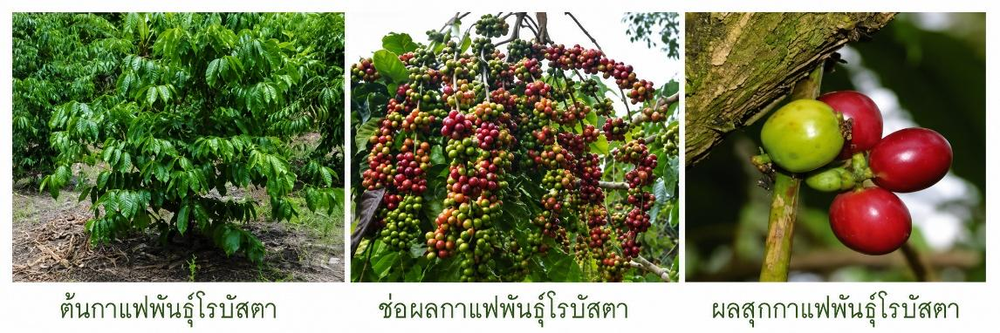
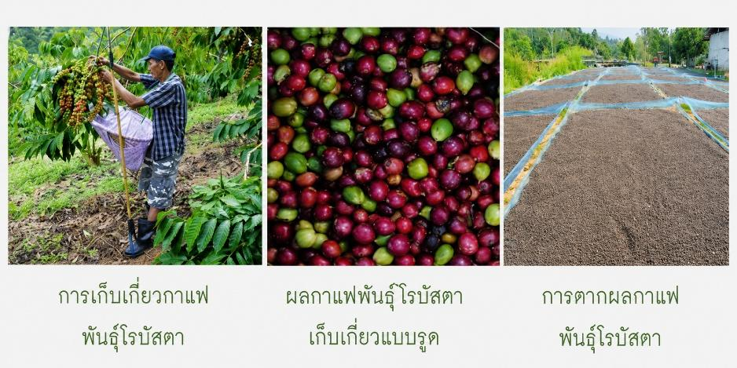
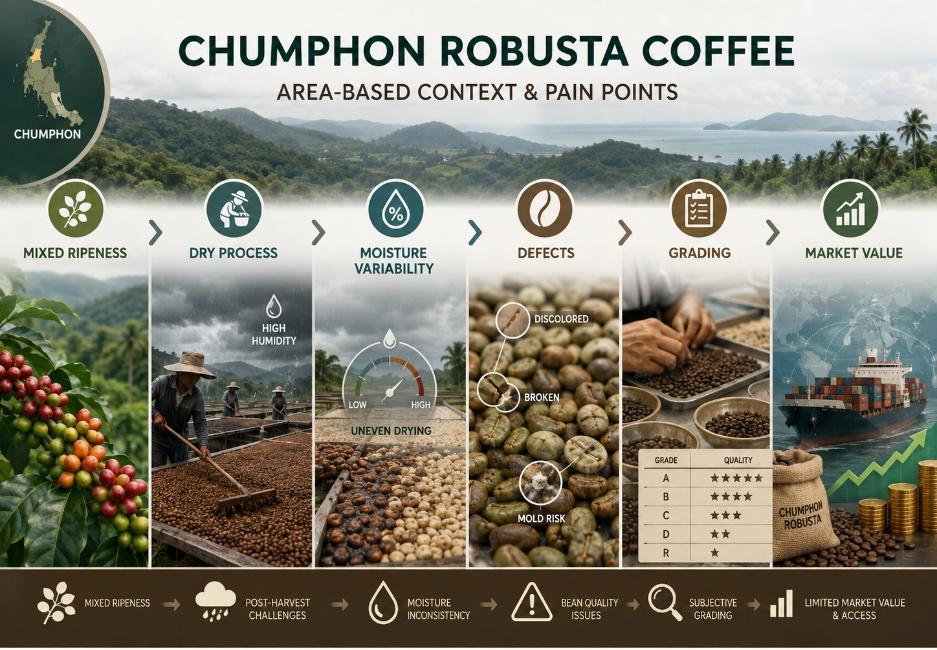
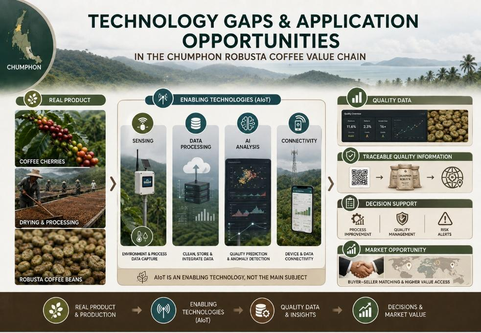
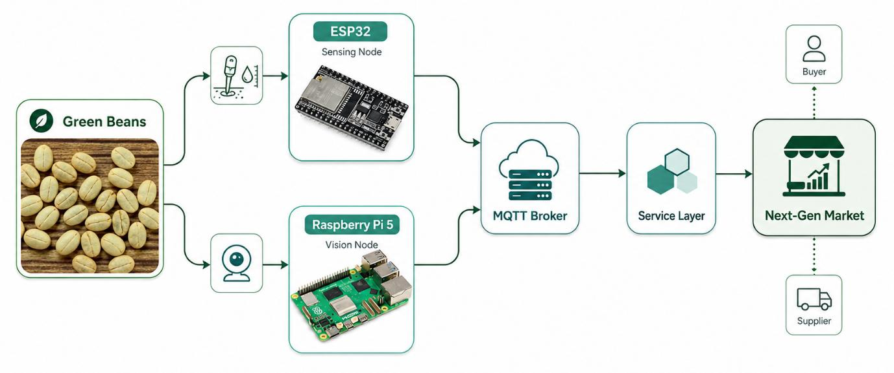

<title>TGR2026 Team Coach Plan</title>
<meta name="claude:viewport-fit-sides" content="cover">
<link rel="preconnect" href="https://fonts.googleapis.com">
<link rel="stylesheet" href="https://fonts.googleapis.com/css2?family=Bai+Jamjuree:wght@500;600;700&family=IBM+Plex+Sans+Thai:wght@400;500;600&family=IBM+Plex+Mono:wght@400;600&display=swap">
<style>
/* Layout: one reading column, sticky section nav, schedules as scrollable tables, team colors only as markers */
:root {
  --bg: #F6F8F7;
  --surface: #FFFFFF;
  --fg: #16201D;
  --muted: #5A6763;
  --line: #DCE3E0;
  --viridian: #40826D;
  --viridian-ink: #2F6655;
  --viridian-soft: #E3EFEA;
  --coral: #E5483E;
  --coral-soft: #FDE8E6;
  --violet: #6A4BF0;
  --violet-soft: #ECE8FF;
  --warn-soft: #FFF4D6;
  --warn-ink: #7A5600;
  --f-display: "Bai Jamjuree", "Sukhumvit Set", "Thonburi", system-ui, sans-serif;
  --f-body: "IBM Plex Sans Thai", "Sukhumvit Set", "Thonburi", system-ui, sans-serif;
  --f-mono: "IBM Plex Mono", ui-monospace, Menlo, monospace;
}
@media (prefers-color-scheme: dark) { :root:not([data-theme="light"]) {
  --bg: #0F1714; --surface: #16211D; --fg: #E6EEEA; --muted: #9DAEA8; --line: #2A3833;
  --viridian: #5FA88C; --viridian-ink: #8CCBB2; --viridian-soft: #1C2E27;
  --coral: #FF7A70; --coral-soft: #3A1F1D; --violet: #9C86FF; --violet-soft: #251F42;
  --warn-soft: #3A3018; --warn-ink: #F2D27A; color-scheme: dark } }
:root[data-theme="dark"] {
  --bg: #0F1714; --surface: #16211D; --fg: #E6EEEA; --muted: #9DAEA8; --line: #2A3833;
  --viridian: #5FA88C; --viridian-ink: #8CCBB2; --viridian-soft: #1C2E27;
  --coral: #FF7A70; --coral-soft: #3A1F1D; --violet: #9C86FF; --violet-soft: #251F42;
  --warn-soft: #3A3018; --warn-ink: #F2D27A; color-scheme: dark }

body { background: var(--bg); color: var(--fg); font: 400 16px/1.7 var(--f-body); }
body::before { content: ""; position: fixed; inset: 0 0 auto; height: env(safe-area-inset-top, 0px); z-index: 10; background: var(--surface); }
.wrap { max-width: 920px; margin: 0 auto; padding-left: max(16px, env(safe-area-inset-left, 0px)); padding-right: max(16px, env(safe-area-inset-right, 0px)); }
a { color: var(--viridian-ink); }
:focus-visible { outline: 2px solid var(--viridian); outline-offset: 2px; }

header.top { background: var(--surface); border-bottom: 1px solid var(--line); }
header.top .wrap { padding-block: 40px 28px; display: grid; gap: 20px; }
.eyebrow { font: 600 12px/1 var(--f-mono); letter-spacing: .12em; text-transform: uppercase; color: var(--viridian-ink); }
h1 { font: 700 clamp(28px, 5vw, 42px)/1.2 var(--f-display); margin: 0; text-wrap: balance; }
h1 small { display: block; font: 500 clamp(16px, 2.4vw, 20px)/1.4 var(--f-display); color: var(--muted); margin-top: 6px; }
.meta { display: flex; flex-wrap: wrap; gap: 8px 24px; font-size: 14px; color: var(--muted); }
.meta b { color: var(--fg); font-weight: 600; }

.teams { display: grid; grid-template-columns: repeat(3, minmax(0, 1fr)); gap: 12px; }
.team { display: grid; grid-template-columns: 64px minmax(0,1fr); gap: 12px; align-items: center; padding: 12px; border: 1px solid var(--line); border-radius: 12px; background: var(--bg); }
.team .ic { width: 64px; height: 64px; }
.team .nm { font: 600 16px/1.3 var(--f-mono); }
.team .rl { font-size: 13px; color: var(--muted); line-height: 1.45; }
.team.canet .nm { color: var(--viridian-ink); }
.team.click .nm { color: var(--coral); }
.team.scroll .nm { color: var(--violet); }

nav.toc { position: sticky; top: env(safe-area-inset-top, 0px); z-index: 5; background: color-mix(in srgb, var(--surface) 92%, transparent); backdrop-filter: blur(8px); border-bottom: 1px solid var(--line); }
nav.toc .wrap { display: flex; gap: 4px; overflow-x: auto; padding-block: 8px; scrollbar-width: none; }
nav.toc a { flex: none; text-decoration: none; color: var(--muted); font-size: 14px; padding: 6px 10px; border-radius: 8px; white-space: nowrap; }
nav.toc a:hover { background: var(--viridian-soft); color: var(--viridian-ink); }
nav.toc a span { font-family: var(--f-mono); color: var(--viridian); margin-right: 6px; }

main .wrap { padding-block: 16px 64px; }
section { padding-top: 40px; scroll-margin-top: 56px; }
h2 { font: 700 26px/1.3 var(--f-display); margin: 0 0 16px; display: flex; gap: 12px; align-items: baseline; text-wrap: balance; }
h2 .n { font: 600 15px/1 var(--f-mono); color: var(--viridian); border: 1.5px solid var(--viridian); border-radius: 6px; padding: 5px 7px; }
h3 { font: 600 19px/1.4 var(--f-display); margin: 28px 0 10px; }
p { margin: 0 0 12px; max-width: 68ch; }
ul, ol { margin: 0 0 12px; padding-left: 22px; max-width: 70ch; }
li { margin: 4px 0; }
.lead { font-size: 18px; line-height: 1.65; }
strong { font-weight: 600; }
code { font: 400 .9em var(--f-mono); background: var(--viridian-soft); padding: 1px 5px; border-radius: 4px; }

.flow { display: flex; flex-wrap: wrap; gap: 6px; align-items: center; margin: 12px 0 16px; }
.flow span { background: var(--surface); border: 1px solid var(--line); border-radius: 999px; padding: 4px 12px; font-size: 14px; }
.flow i { font-style: normal; color: var(--muted); }

.note { background: var(--warn-soft); color: var(--warn-ink); border-radius: 10px; padding: 12px 16px; font-size: 15px; margin: 14px 0; max-width: 72ch; }
.note b { color: inherit; }

.tbl { overflow-x: auto; margin: 10px 0 18px; border: 1px solid var(--line); border-radius: 10px; background: var(--surface); }
table { border-collapse: collapse; width: 100%; font-size: 15px; line-height: 1.55; }
th, td { text-align: left; vertical-align: top; padding: 10px 14px; border-bottom: 1px solid var(--line); }
tr:last-child td { border-bottom: 0; }
th { font: 600 13px/1.4 var(--f-body); letter-spacing: .02em; color: var(--muted); background: var(--bg); }
td.d { white-space: nowrap; font-weight: 600; font-variant-numeric: tabular-nums; }
tr.key td { background: var(--viridian-soft); }
.tbl.min table { min-width: 620px; }

figure { margin: 12px 0 20px; background: var(--surface); border: 1px solid var(--line); border-radius: 12px; padding: 10px; }
figure img { display: block; width: 100%; height: auto; border-radius: 6px; }
figure img + img { margin-top: 8px; }
figcaption { font-size: 13px; color: var(--muted); padding: 8px 4px 0; line-height: 1.5; }
figcaption b { color: var(--fg); font-weight: 600; }
.arch { font: 400 13px/1.6 var(--f-mono); background: var(--surface); border: 1px solid var(--line); border-radius: 10px; padding: 14px 16px; overflow-x: auto; white-space: pre; margin: 10px 0 18px; }

.grid2 { display: grid; grid-template-columns: repeat(2, minmax(0, 1fr)); gap: 12px; }
.comp { background: var(--surface); border: 1px solid var(--line); border-radius: 12px; padding: 16px 18px; min-width: 0; }
.comp h4 { margin: 0 0 4px; font: 600 17px/1.4 var(--f-display); }
.comp .who { font: 500 12px/1.4 var(--f-mono); color: var(--viridian-ink); margin-bottom: 8px; }
.comp ul { padding-left: 18px; font-size: 15px; margin: 0; }

.phase { display: grid; grid-template-columns: 132px minmax(0, 1fr); gap: 16px; padding: 18px 0; border-top: 1px solid var(--line); }
.phase:first-of-type { border-top: 0; }
.phase .when { font: 600 14px/1.4 var(--f-mono); color: var(--viridian-ink); }
.phase .when small { display: block; font: 400 12px/1.4 var(--f-body); color: var(--muted); margin-top: 4px; }
.phase h4 { margin: 0 0 6px; font: 600 18px/1.4 var(--f-display); }
.phase .tbl { margin-bottom: 6px; }

.checks { list-style: none; padding: 0; display: grid; gap: 6px; }
.checks li { display: grid; grid-template-columns: 22px minmax(0,1fr); gap: 8px; }
.checks li::before { content: ""; width: 16px; height: 16px; margin-top: 5px; border: 1.5px solid var(--viridian); border-radius: 4px; }

.pill { display: inline-block; font: 600 12px/1.5 var(--f-mono); padding: 1px 8px; border-radius: 999px; }
.pill.c { background: var(--coral-soft); color: var(--coral); }
.pill.s { background: var(--violet-soft); color: var(--violet); }
.pill.g { background: var(--viridian-soft); color: var(--viridian-ink); }

.logos { display: grid; grid-template-columns: repeat(3, minmax(0, 1fr)); gap: 12px; }
.logo { background: var(--surface); border: 1px solid var(--line); border-radius: 12px; padding: 18px; display: grid; gap: 10px; justify-items: center; text-align: center; min-width: 0; }
.logo .ic { width: 140px; height: 140px; }
.logo .nm { font: 600 17px/1.3 var(--f-mono); }
.logo p { font-size: 14px; color: var(--muted); margin: 0; }
.sw { display: inline-flex; gap: 6px; align-items: center; font: 400 13px var(--f-mono); }
.sw i { width: 14px; height: 14px; border-radius: 4px; display: inline-block; }

footer { border-top: 1px solid var(--line); color: var(--muted); font-size: 13px; }
footer .wrap { padding-block: 20px 40px; }

@media (max-width: 720px) {
  .teams, .logos, .grid2 { grid-template-columns: minmax(0, 1fr); }
  .phase { grid-template-columns: minmax(0, 1fr); gap: 6px; }
}
@media (prefers-reduced-motion: reduce) { html { scroll-behavior: auto; } }
html { scroll-behavior: smooth; }
</style>

<header class="top">
  <div class="wrap">
    <div class="eyebrow">TESA Top Gun Rally #20 · <span style="font-family:var(--f-body);letter-spacing:.02em">แผนเตรียมทีม</span></div>
    <h1>แพลตฟอร์ม AIoT เพื่อขับเคลื่อนกาแฟโรบัสตาชุมพรสู่ตลาดยุคใหม่<small>Chumphon Robusta AIoT Platform Toward The Next-Gen Market</small></h1>
    <div class="meta">
      <span><b>แข่ง</b> 15–21 พ.ย. 2569 · สจล. วิทยาเขตชุมพรเขตรอุดมศักดิ์</span>
      <span><b>เตรียมตัว</b> 23 ต.ค. – 14 พ.ย. 2569</span>
      <span><b>ทีม</b> ภาควิชาคอมพิวเตอร์ คณะวิทยาศาสตร์ ม.ศิลปากร · 15 คน 3 ทีม</span>
    </div>
    <div class="teams">
      <div class="team canet"><div><div class="nm">CANET</div><div class="rl">ทีมหลัก · อ.อภิเษก หงษ์วิทยากร</div></div></div>
      <div class="team click"><div><div class="nm">muzik.click()</div><div class="rl">ทีม observe · ผศ.ดร.สัจจาภรณ์ ไวจรรยา</div></div></div>
      <div class="team scroll"><div><div class="nm">muzik.scroll()</div><div class="rl">ทีม observe · ผศ.ดร.ณัฐโชติ พรหมฤทธิ์</div></div></div>
    </div>
  </div>
</header>

<nav class="toc" aria-label="สารบัญ">
  <div class="wrap">
    <a href="#challenge"><span>1</span>โจทย์</a>
    <a href="#components"><span>2</span>Component</a>
    <a href="#research"><span>3</span>ความรู้ที่ต้องค้น</a>
    <a href="#prep"><span>4</span>แผนก่อนแข่ง</a>
    <a href="#during"><span>4</span>ระหว่างแข่ง</a>
    <a href="#report"><span>5</span>รายงาน</a>
    <a href="#logos"><span>6</span>ทีมและโลโก้</a>
  </div>
</nav>

<main><div class="wrap">

<section id="challenge">
  <h2><span class="n">1</span>โจทย์ต้องการให้ทำอะไร</h2>
  <p class="lead">สร้าง<strong>ระบบ AIoT ครบวงจร</strong>ที่ทำให้ "คุณภาพ" ของกาแฟโรบัสตาชุมพรถูก <strong>วัด → บันทึก → วิเคราะห์ → สื่อสาร</strong> เป็นข้อมูลที่ตรวจสอบได้ แล้วนำไปใช้<strong>ตัดสินใจและกำหนดมูลค่าในตลาดยุคใหม่</strong> โดยเน้น <strong>System Integration</strong> มากกว่าความเก่งเฉพาะส่วน</p>

  <h3>ปัญหาจริงที่โจทย์อิงอยู่</h3>
  <figure>
    
    
    <figcaption><b>รูป 1</b> ลักษณะกาแฟพันธุ์โรบัสตา: ต้น ช่อผล ผลสุก การเก็บเกี่ยว ผลที่เก็บแบบรูด และการตาก · ที่มา: กระบวนการจัดการหลังการเก็บเกี่ยวกาแฟอะราบิกาและโรบัสตาในประเทศไทยกับการปนเปื้อนสารโอคราทอกซิน (อ้างใน TGR2026 Proposal)</figcaption>
  </figure>
  <div class="flow">
    <span>ผลสุกปนกัน</span><i>→</i><span>Dry Process ไม่ถูกควบคุม</span><i>→</i><span>ความชื้นไม่สม่ำเสมอ</span><i>→</i><span>รา · สีผิด · แตกหัก</span><i>→</i><span>จัดเกรดแบบอัตวิสัย</span><i>→</i><span>ราคาไม่สะท้อนคุณภาพ</span><i>→</i><span>เข้าถึงตลาดมูลค่าสูงได้จำกัด</span>
  </div>
  <figure>
    
    <figcaption><b>รูป 2</b> Area-Based Context &amp; Pain Points · ที่มา: TGR2026 Proposal</figcaption>
  </figure>
  <p>ทิศทางของจังหวัดคือเปลี่ยนจากแข่ง<strong>ปริมาณ</strong>เป็นสร้างมูลค่าจาก<strong>คุณภาพ</strong> (Chumphon Fine Robusta Center, Best of Chumphon, Amazing Robusta @ Chumphon)</p>
  <div class="note"><b>หลักคิดที่กรรมการเน้น:</b> AIoT เป็นเครื่องมือ ไม่ใช่ตัวหลักของงาน และไม่แทนที่ความรู้ของเกษตรกรหรือผู้เชี่ยวชาญ cupping ทุกฟีเจอร์ต้องตอบได้ว่าช่วยเกษตรกรหรือผู้ซื้ออย่างไร</div>
  <figure>
    
    <figcaption><b>รูป 3</b> Technology Gaps &amp; Application Opportunities: Real product → Enabling technologies (AIoT) → Quality data → Decisions &amp; market value · ที่มา: TGR2026 Proposal</figcaption>
  </figure>

  <h3>สถาปัตยกรรมที่โจทย์กำหนด</h3>
  <figure>
    
    <figcaption><b>รูป 4</b> System Diagram · ที่มา: TGR2026 Proposal · แผนผังข้อความด้านล่างสรุปเส้นทางข้อมูลเดียวกัน</figcaption>
  </figure>
<div class="arch">Green Beans ─┬─ Sensor ─▶ ESP32 (Sensing Node) ───────┐
             └─ Camera ─▶ Raspberry Pi 5 (Vision Node) ┴─▶ MQTT Broker ─▶ Service Layer ─▶ Next-Gen Market
                                                                                            ├─ Buyer
                                                                                            └─ Supplier</div>

  <h3>สิ่งที่กรรมการให้คะแนน</h3>
  <div class="tbl"><table>
    <tr><th>องค์ความรู้</th><th>สิ่งที่ต้องทำได้</th></tr>
    <tr><td>Project Management</td><td>เข้าใจปัญหา แตกงาน ประสานงาน ปรับแผน แก้ปัญหา</td></tr>
    <tr><td>MCU + Sensor</td><td>ESP32 เชื่อมเซ็นเซอร์วัดค่าทางกายภาพ (ผู้จัดให้เซ็นเซอร์)</td></tr>
    <tr><td>AI บน Single Board Computer</td><td>พัฒนาหรือใช้โมเดล AI บน Raspberry Pi 5 <strong>ห้ามใช้ AI HAT+ หรือ accelerator ใด ๆ</strong></td></tr>
    <tr><td>Next-Gen Market</td><td>โปรแกรมตลาดด้วย Python + AI มี Local SLM ขนาดราว 1.5B เช่น Ollama <code>qwen2.5:1.5b</code> บน notebook</td></tr>
    <tr><td>Surprise Special Problem</td><td>ปัญหาพิเศษด้าน System Integration ประกาศระหว่างสัปดาห์แข่ง</td></tr>
  </table></div>
  <p>ดัชนีประเมินทุกกิจกรรม: การพัฒนาซอฟต์แวร์ · การใช้เครื่องมือ · การประยุกต์และแก้ปัญหา · <strong>การนำเสนอ</strong> กรรมการอย่างน้อย 3 คนต่อกิจกรรม คะแนนสะสมรายวัน และต้องสาธิตต่อกรรมการ มีรางวัล Daily Top Score และ Popular Vote ด้วย</p>
  <div class="note"><b>เวลาส่งงานยังไม่ชัด:</b> proposal ระบุส่งซอร์สโค้ดก่อน 18:00 แต่ตารางระบุ "17:00 ส่งงาน" แผนนี้ยึด 17:00 ไว้ก่อน และต้องถามผู้จัดใน Pre-Camp</div>

  <h3>จังหวะการแข่ง</h3>
  <div class="tbl min"><table>
    <tr><th>วัน</th><th>เช้า</th><th>บ่าย</th><th>ความหมายต่อทีม</th></tr>
    <tr><td class="d">อา. 15 พ.ย.</td><td>—</td><td>15:00 ลงทะเบียน</td><td>เดินทาง ตั้งเครื่อง ทดสอบเครือข่าย</td></tr>
    <tr><td class="d">จ. 16 พ.ย.</td><td>พิธีเปิด · บรรยายโจทย์</td><td>อบรม PM · กิจกรรมศูนย์เกษตรฯ</td><td>เก็บ requirement และข้อมูลภาคสนามให้มากที่สุด</td></tr>
    <tr><td class="d">อ. 17 พ.ย.</td><td>อบรม 3 ห้องคู่ขนาน</td><td>13:00 โจทย์ 3 หัวข้อพร้อมกัน → 17:00 ส่ง</td><td>ต้องแยกคนทำ 3 track คู่ขนาน</td></tr>
    <tr><td class="d">พ. 18 พ.ย.</td><td>อบรม 3 ห้องคู่ขนาน</td><td>13:00 โจทย์ 3 หัวข้อ → 17:00 ส่ง</td><td>รูปแบบเดิม แต่ยากขึ้น</td></tr>
    <tr class="key"><td class="d">พฤ. 19 พ.ย.</td><td colspan="2">โจทย์ Integration ทั้งวัน</td><td>วันชี้ขาด: ต่อทุกชิ้นให้ครบวงจร</td></tr>
    <tr><td class="d">ศ. 20 พ.ย.</td><td>พัฒนาต่อ</td><td>13:00 Presentation</td><td>เล่าจากปัญหาเกษตรกรถึงมูลค่า</td></tr>
    <tr class="key"><td class="d">ส. 21 พ.ย.</td><td>09:00 Live Demo</td><td>ประกาศผล · พิธีปิด</td><td>demo ต้องไม่สะดุด</td></tr>
  </table></div>

  <h3>อุปกรณ์</h3>
  <ul>
    <li><strong>ผู้จัดให้:</strong> เซ็นเซอร์สำหรับ ESP32 ยังไม่ระบุรุ่น จึงต้องพร้อมรับทั้ง I2C, 1-Wire, Analog และ UART</li>
    <li><strong>ทีมเตรียมเอง:</strong> Notebook อย่างน้อย 1 เครื่องที่รัน SLM 1.5B ได้ (แนะนำ i5, RAM 16GB, GTX 1650 หรือ RTX), ESP32 (Wi-Fi, Digital I/O, ADC, PWM), Raspberry Pi 5 (ห้าม AI HAT), ปลั๊กพ่วง</li>
    <li><strong>ควรพกสำรอง:</strong> ESP32 2–3 ตัว, PSU 27W + Active Cooler ของ Pi 5, microSD ที่ลงระบบแล้ว 2 ใบ, กล้อง CSI (สาย 22-pin) และ USB webcam, breadboard สายจัมเปอร์ รีเลย์ MOSFET, มัลติมิเตอร์, <strong>travel router ของทีม</strong>, กล่องไฟสำหรับถ่ายเมล็ด, ตัวอย่างเมล็ดกาแฟหลายเกรด</li>
  </ul>

  <h3>แนวโจทย์ย่อยที่คาดการณ์ไว้ใช้ซ้อม</h3>
  <div class="tbl"><table>
    <tr><th>Track</th><th>โจทย์ที่น่าจะออก</th></tr>
    <tr><td>Embedded</td><td>วัดความชื้น อุณหภูมิ ความชื้นสัมพัทธ์ระหว่างตาก-อบ, ชั่งน้ำหนัก (load cell) ดูการลดน้ำ, วัดสีหรือความสุก, คุมพัดลม/ฮีตเตอร์ด้วย PWM หรือรีเลย์, แจ้งเตือนเกิน threshold, ส่ง MQTT</td></tr>
    <tr><td>Edge AI</td><td>จำแนกข้อบกพร่อง (ดำ รา แตก มอดเจาะ ดิบ), นับเมล็ดและคำนวณ % defect เป็นเกรด, แยกผลเชอร์รีตามความสุก, วัดขนาดเมล็ดจากภาพ, รัน real-time บน CPU</td></tr>
    <tr><td>Market</td><td>API รับข้อมูลล็อต, ราคาตามเกรด, จับคู่ผู้ซื้อ–ผู้ขาย, ตรวจสอบย้อนกลับด้วย QR, dashboard, ใช้ SLM สรุปหรืออธิบายคุณภาพ</td></tr>
    <tr><td>Integration / Surprise</td><td>ต่อทุก node, ทนเครือข่ายหลุดหรือข้อมูลผิด, เปลี่ยน requirement กะทันหัน, ให้ AI สั่งงานฮาร์ดแวร์แบบปิดลูป, เพิ่มจำนวน node</td></tr>
  </table></div>
</section>

<section id="components">
  <h2><span class="n">2</span>Component ที่นักศึกษาต้องเรียนรู้</h2>
  <p>แบ่งเป็น 6 กลุ่ม ผูกกับบทบาท 5 คนในทีม: Captain/PM · Embedded Lead · Edge AI Lead · Market Lead · Integrator &amp; Presenter</p>
  <div class="grid2">
    <div class="comp"><h4>C1 · ESP32 + Sensor (C/C++)</h4><div class="who">Embedded Lead + Integrator</div><ul>
      <li>Arduino IDE / PlatformIO, flash และ monitor คล่องทุกเครื่อง</li>
      <li>ADC1 (GPIO32–39) เพราะ ADC2 ใช้ไม่ได้เมื่อเปิด Wi-Fi, <code>analogReadMilliVolts()</code>, calibration, filter</li>
      <li>I2C, 1-Wire, UART, SPI: ต่อเซ็นเซอร์ที่ไม่เคยเห็นให้ได้ใน 30 นาทีจาก datasheet</li>
      <li>เซ็นเซอร์ที่เกี่ยวข้อง: SHT3x/BME280/DHT22, capacitive moisture, DS18B20, HX711 + load cell, TCS34725/AS7341</li>
      <li>PWM (LEDC), รีเลย์, MOSFET, การคุมแบบ hysteresis หรือ PID</li>
      <li>Wi-Fi + MQTT, reconnect, LWT, ArduinoJson, NTP, <code>millis()</code> หรือ FreeRTOS task, watchdog</li>
    </ul></div>
    <div class="comp"><h4>C2 · Edge AI บน Raspberry Pi 5</h4><div class="who">Edge AI Lead</div><ul>
      <li>Pi OS 64-bit, Picamera2 หรือ USB webcam, SD image สำรอง</li>
      <li>OpenCV: HSV/Lab, threshold, contour, watershed แยกเมล็ดที่ติดกัน เป็น baseline ที่ไม่ต้องใช้ deep learning</li>
      <li>Dataset เมล็ดจริงหลายเกรดในกล่องไฟ, label ด้วย Label Studio, CVAT หรือ Roboflow</li>
      <li>YOLO ขนาด n, MobileNet, หรือ scikit-learn บน feature สีและรูปร่าง</li>
      <li>Export เป็น ONNX, NCNN หรือ TFLite, quantize INT8, วัด FPS และความร้อน</li>
      <li>นับเมล็ด, % defect, กฎจัดเกรด แล้วส่ง JSON ทาง MQTT</li>
    </ul></div>
    <div class="comp"><h4>C3 · Messaging &amp; Infrastructure</h4><div class="who">Integrator</div><ul>
      <li>Mosquitto ใน Docker บน Pi, topic, QoS, retain, LWT, <code>mosquitto_sub</code> สำหรับ debug</li>
      <li><strong>Data contract:</strong> ตกลง topic และ JSON schema ก่อนเขียนโค้ด ให้ <code>lot_id</code> + timestamp เป็นกุญแจเชื่อมทุกชั้น</li>
      <li>docker compose, config แยกจากโค้ด</li>
      <li>travel router, IP คงที่ของ broker, แผนสำรองเมื่อ Wi-Fi สนามล่ม</li>
      <li>Mock publisher ของทุก node เพื่อให้ไม่มีใครต้องรอ hardware</li>
    </ul></div>
    <div class="comp"><h4>C4 · Service &amp; Next-Gen Market (Python)</h4><div class="who">Market Lead</div><ul>
      <li>FastAPI + paho-mqtt + SQLite + Pydantic + logging</li>
      <li>รวมข้อมูล sensor และ vision ต่อล็อต แล้วคำนวณคะแนนคุณภาพ</li>
      <li>ราคาตามเกรด, premium ตามคุณภาพ, จับคู่ผู้ซื้อ–ผู้ขาย, ประมูลอย่างง่าย, QR ต่อล็อต</li>
      <li>Streamlit dashboard: หน้าผู้ซื้อ ผู้ขาย และภาพรวม</li>
      <li>Ollama <code>qwen2.5:1.5b</code>: structured output (JSON), tool calling, RAG ขนาดเล็ก, วัด latency, fallback</li>
      <li>ตัวเลขคุณภาพต้องมาจาก sensor หรือโมเดล ส่วน SLM ใช้อธิบาย สรุป และจับคู่</li>
    </ul></div>
    <div class="comp"><h4>C5 · Project Management</h4><div class="who">Captain/PM (ทุกคน)</div><ul>
      <li>อ่านโจทย์แล้วแตกงาน (WBS) ให้เสร็จใน 15 นาที, Kanban, timebox, sync ทุก 45 นาที</li>
      <li>Git repo เดียว แยกโฟลเดอร์ตาม node, branch ต่อคน, tag ทุกครั้งที่ส่งงาน</li>
      <li>Definition of Done: README, ทดสอบจากเครื่องสะอาด, freeze ก่อนส่ง</li>
      <li>ติดเกิน 20 นาทีให้ escalate ให้ PM ตัดสินใจข้าม ลดสเปก หรือสลับคน</li>
    </ul></div>
    <div class="comp"><h4>C6 · Presentation &amp; Demo</h4><div class="who">Integrator &amp; Presenter</div><ul>
      <li>โครงเรื่อง: ปัญหาเกษตรกร → ระบบ → ข้อมูลคุณภาพ → การตัดสินใจและมูลค่า → ผลทดสอบ → ต่อยอด</li>
      <li>Live demo 3 นาทีแบบกดแล้วเล่นได้ พร้อมวิดีโอสำรองและข้อมูลตัวอย่าง</li>
      <li>ตัวเลขที่ต้องมี: latency, accuracy, FPS</li>
      <li>ทุกคนตอบคำถามส่วนของตัวเองได้ใน 1 นาที</li>
    </ul></div>
  </div>
</section>

<section id="research">
  <h2><span class="n">3</span>ความรู้เกี่ยวกับโจทย์ที่ต้องค้นหา</h2>
  <p>ทีม observe เป็นเจ้าภาพค้นและสรุป <span class="pill c">click</span> รับ R1–R6 <span class="pill s">scroll</span> รับ R7–R12 แล้วนำเสนอให้ทุกทีมฟัง ทุกข้อต้องอ้างอิงแหล่งที่มา</p>
  <div class="tbl min"><table>
    <tr><th>#</th><th>หัวข้อ</th><th>คำถามที่ต้องตอบ</th><th>ใช้กับ</th></tr>
    <tr><td>R1</td><td>โรบัสตาและพื้นที่ชุมพร</td><td>ลักษณะพันธุ์ ฤดูเก็บเกี่ยว พื้นที่และผลผลิตปัจจุบัน แหล่ง GI ในจังหวัด (เช่น กาแฟเขาทะลุ ต้องตรวจสอบ)</td><td>Presentation</td></tr>
    <tr><td>R2</td><td>ความสุกของผลเชอร์รี</td><td>ระดับสี เขียว เหลือง แดง สุกเกิน, วิธีวัด (สี, Brix), ผลของการเก็บแบบรูด</td><td>Embedded, Edge AI</td></tr>
    <tr><td>R3</td><td>กระบวนการหลังเก็บเกี่ยว</td><td>Dry, Wet, Honey process, ลานตาก แคร่ยกพื้น โรงอบโซลาร์, ระยะเวลา, อุณหภูมิที่เหมาะสม, ความเสี่ยงช่วงฝน</td><td>Embedded</td></tr>
    <tr><td>R4</td><td>ความชื้นกาแฟสาร</td><td>ช่วงเป้าหมาย (โดยทั่วไปราว 10–12.5% ต้องตรวจกับ ISO 6673 และมาตรฐานไทย), water activity, วิธีวัด, การ calibrate เซ็นเซอร์ราคาถูก</td><td>Embedded</td></tr>
    <tr><td>R5</td><td>เชื้อราและ Ochratoxin A</td><td>สภาวะที่ทำให้เกิดรา ความสัมพันธ์กับความชื้น อุณหภูมิ เวลา และเกณฑ์ตลาดส่งออก</td><td>Embedded, Market</td></tr>
    <tr><td>R6</td><td>ข้อบกพร่องของเมล็ด</td><td>เมล็ดดำ เปรี้ยว รา มอดเจาะ แตกหัก ดิบ สิ่งปลอมปน, ข้อบกพร่องหลักและรอง, ลักษณะที่เห็นจากภาพ</td><td>Edge AI</td></tr>
    <tr><td>R7</td><td>การจัดเกรดสารกาแฟโรบัสตา</td><td>มาตรฐานสินค้าเกษตรไทย (มกษ.), ขนาดตะแกรง, % defect ต่อเกรด, เกณฑ์ Fine Robusta และ Q Robusta</td><td>Edge AI, Market</td></tr>
    <tr><td>R8</td><td>Cupping</td><td>แบบฟอร์ม Robusta cupping, คะแนนที่ถือว่า fine, อะไรวัดได้หรือวัดไม่ได้ด้วยเซ็นเซอร์</td><td>Market</td></tr>
    <tr><td>R9</td><td>ห่วงโซ่มูลค่าและราคา</td><td>ผู้เล่นในห่วงโซ่, ราคาอ้างอิงตลาดโลกและในจังหวัด, ส่วนต่างราคาตามคุณภาพ</td><td>Market</td></tr>
    <tr><td>R10</td><td>ตลาดยุคใหม่</td><td>ซื้อขายตรง, traceability และ Digital Product Passport, กฎตรวจสอบย้อนกลับของตลาดส่งออก (เช่น EUDR ต้องตรวจสถานะล่าสุด), ประมูลกาแฟพิเศษ, e-commerce</td><td>Market, Presentation</td></tr>
    <tr><td>R11</td><td>หน่วยงานและงานในพื้นที่</td><td>Chumphon Fine Robusta Center, Amazing Robusta, Best of Chumphon, งานวิจัย สจล.ชุมพร (ถังหมัก ตู้อบโซลาร์ เครื่องคัดสี เครื่องคั่วลมร้อน)</td><td>Presentation</td></tr>
    <tr><td>R12</td><td>ผู้ใช้จริง</td><td>เกษตรกรรายย่อยใช้อุปกรณ์อะไรและต้องการข้อมูลอะไร ผู้ซื้อต้องเห็นอะไรก่อนตัดสินใจ</td><td>Market UX</td></tr>
  </table></div>
  <div class="note"><b>ส่งภายใน 1 พ.ย.:</b> Coffee Domain Cheat Sheet 2–3 หน้า, ตาราง threshold (ความชื้น อุณหภูมิ % defect → เกรด → ช่วงราคา) ที่ทุก track ใช้ร่วมกัน และสไลด์ปัญหาเกษตรกร 3 หน้า ตัวเลขด้านกาแฟในหน้านี้เป็นค่าตั้งต้น ต้องตรวจสอบก่อนใช้นำเสนอ</div>
</section>

<section id="prep">
  <h2><span class="n">4</span>แผนก่อนแข่ง 23 ต.ค. – 14 พ.ย.</h2>
  <ul>
    <li><strong>ครบวงจรก่อน สวยทีหลัง:</strong> มีระบบ end-to-end ที่ทำงานได้ภายใน 1 พ.ย.</li>
    <li><strong>Offline-first:</strong> ไลบรารี โมเดล docker image และ datasheet ต้องอยู่ในเครื่องก่อนออกเดินทาง</li>
    <li><strong>Mock ทุก node:</strong> ไม่มีใครต้องรอใคร</li>
    <li><strong>ซ้อมแบบวันแข่งจริง:</strong> Mock Day รับโจทย์ 13:00 ส่ง 17:00</li>
    <li><strong>ทีม observe ฝึกเต็มรูปแบบ:</strong> ใช้ระบบบัดดี้ 1:1 ตามบทบาท และผลัดกันตั้งโจทย์ Mock Day</li>
  </ul>

  <div class="phase">
    <div class="when">23–25 ต.ค.<small>Phase 0 · อบรมเข้ม</small></div>
    <div>
      <h4>อบรมเข้ม + Pre-Camp</h4>
      <div class="tbl"><table>
        <tr><th>วัน</th><th>หัวข้อ (ตาม rev7)</th><th>ต้องได้ภายในวัน</th></tr>
        <tr><td class="d">ศ. 23</td><td>Mission Analysis · ESP32 &amp; Sensor I–II · Edge AI on Pi 5</td><td>toolchain ESP32 ใช้ได้ทุกคน, อ่านเซ็นเซอร์ 2 ชนิด, แบ่งบทบาท, ตั้ง repo</td></tr>
        <tr class="key"><td class="d">ส. 24</td><td><strong>Pre-Camp Online (TESA)</strong> · Pi 5 + Docker · MQTT Broker · System Integration · Mission Summarize</td><td>จดกติกา, ถามผู้จัด, ESP32 ส่งข้อมูลถึง Mosquitto บน Pi, Data Contract v1</td></tr>
        <tr><td class="d">อา. 25</td><td>PM, Scope, WBS · Agile · ML &amp; Computer Vision · Local SLM (Ollama)</td><td>WBS, Kanban ของแต่ละทีม, Ollama รันได้อย่างน้อยทีมละ 1 เครื่อง</td></tr>
      </table></div>
      <p><strong>คำถามสำหรับผู้จัดใน Pre-Camp:</strong> รุ่นเซ็นเซอร์ที่จะได้รับ · มี broker หรือเครือข่ายกลางไหม ใช้ travel router ได้ไหม · ส่งโค้ดแบบไหน และเวลา 17:00 หรือ 18:00 · ใช้อินเทอร์เน็ต คลาวด์ หรือ LLM ออนไลน์ได้ไหม · ใช้โมเดลที่เทรนมาก่อนได้ไหม · ทีมจากสถาบันเดียวกันช่วยกันได้แค่ไหน · อาจารย์ช่วยระหว่างทำโจทย์ได้ไหม · มีเมล็ดกาแฟตัวอย่างให้ไหม</p>
    </div>
  </div>

  <div class="phase">
    <div class="when">26 ต.ค. – 1 พ.ย.<small>Phase 1 · ต้นแบบ v0</small></div>
    <div>
      <h4>สร้างชิ้นส่วนและต้นแบบ v0</h4>
      <div class="tbl"><table>
        <tr><th>Track</th><th>เป้าหมายสัปดาห์</th></tr>
        <tr><td>Embedded</td><td>ไลบรารีเซ็นเซอร์อย่างน้อย 6 ชนิด, firmware template (Wi-Fi, MQTT, NTP, JSON, reconnect, config), ตัวคุมการอบแห้ง</td></tr>
        <tr><td>Edge AI</td><td>ภาพเมล็ด 3–5 คลาส (ทีม observe ช่วยถ่ายและ label), baseline OpenCV, โมเดล v0 บน Pi พร้อมค่า FPS</td></tr>
        <tr><td>Market</td><td>FastAPI + SQLite + MQTT ingest, dashboard v0, ตารางราคาตามเกรด, prompt SLM อธิบายคุณภาพเป็น JSON</td></tr>
        <tr><td>Integration</td><td>Mosquitto ใน docker compose, mock publisher ทุก node, travel router + IP คงที่</td></tr>
        <tr><td>Domain</td><td>Coffee Domain Cheat Sheet (R1–R12)</td></tr>
      </table></div>
      <p><strong>อา. 1 พ.ย.:</strong> อบรมรอบ 2 (Backlog, Sprint, Kanban, Monitoring, JSON &amp; API, Data Visualization) แล้วเย็นนั้น <strong>Demo End-to-End v0</strong>: ESP32 → MQTT → Service → Dashboard พร้อมผล vision 1 ภาพ</p>
    </div>
  </div>

  <div class="phase">
    <div class="when">2–8 พ.ย.<small>Phase 2 · Integration</small></div>
    <div>
      <h4>Integration และ Mock Day</h4>
      <div class="tbl"><table>
        <tr><td class="d">จ. 2 – อ. 3</td><td>ปิดช่องว่างจาก v0, เพิ่ม QR traceability, จับคู่ผู้ซื้อ–ผู้ขาย, กฎจัดเกรด</td></tr>
        <tr class="key"><td class="d">พ. 4</td><td><strong>Mock Day #1</strong> รับโจทย์ 3 หัวข้อ 13:00 ส่งพร้อม demo 17:00 · ผลัดกันตั้งโจทย์: scroll ตั้งให้ CANET, CANET ตั้งให้ click, click ตั้งให้ scroll โดยมีอาจารย์ร่วม</td></tr>
        <tr><td class="d">พฤ. 5 – ศ. 6</td><td>Retro, แก้จุดอ่อน, ฝึกต่อเซ็นเซอร์ที่ไม่คุ้นแบบจับเวลา</td></tr>
        <tr class="key"><td class="d">ส. 7</td><td><strong>Mock Day #2</strong> ยากขึ้น มี surprise กลางทาง เช่น เปลี่ยน schema หรือถอด broker</td></tr>
        <tr><td class="d">อา. 8</td><td>Retro, data contract v2, เริ่ม slide template</td></tr>
      </table></div>
    </div>
  </div>

  <div class="phase">
    <div class="when">9–12 พ.ย.<small>Phase 3 · Hardening</small></div>
    <div>
      <h4>Hardening และซ้อมเต็มรูปแบบ</h4>
      <div class="tbl"><table>
        <tr><td class="d">จ. 9</td><td>ทดสอบความทนทาน: ถอด Wi-Fi หรือ broker, ข้อมูลผิดรูปแบบ, Pi ร้อน, SLM ช้า</td></tr>
        <tr class="key"><td class="d">อ. 10</td><td><strong>Mock Integration Day</strong> 09:00–17:00 จำลองวันที่ 19 พ.ย.</td></tr>
        <tr><td class="d">พ. 11</td><td>Retro, SD image สุดท้าย, docker image, cache ของ wheel และโมเดล, วิดีโอ demo สำรอง</td></tr>
        <tr class="key"><td class="d">พฤ. 12</td><td><strong>ซ้อมนำเสนอและ Live Demo</strong> ต่อหน้าอาจารย์ 3 ท่าน ให้คะแนนตามดัชนีของ TESA แล้วตัดสิน Go/No-Go</td></tr>
      </table></div>
    </div>
  </div>

  <div class="phase">
    <div class="when">13–14 พ.ย.<small>Phase 4 · Freeze</small></div>
    <div>
      <h4>Freeze และแพ็กของ</h4>
      <ul>
        <li><strong>ศ. 13:</strong> ตรวจ checklist อุปกรณ์และของสำรอง, ติดฉลากอุปกรณ์ตามสีทีม, ทดสอบ notebook ทุกเครื่องแบบ offline, backup repo ลง USB</li>
        <li><strong>ส. 14:</strong> พักผ่อน แพ็กของ ประชุมสั้น 30 นาทีเรื่องการเดินทาง เบอร์ติดต่อ เสื้อ TGR2026 ยาและของใช้ส่วนตัว</li>
      </ul>
    </div>
  </div>

  <h3>Checklist Go/No-Go (12 พ.ย.)</h3>
  <ul class="checks">
    <li>ESP32 ต่อเซ็นเซอร์ใหม่และส่ง MQTT ได้ใน 30 นาที</li>
    <li>โมเดลบน Pi 5 (CPU) ได้อย่างน้อย 5 FPS หรือไม่เกิน 1 วินาทีต่อภาพ โดยไม่ throttle</li>
    <li>Service และ dashboard ขึ้นภายใน 2 นาทีด้วย <code>docker compose up</code></li>
    <li>SLM ตอบ JSON ถูกรูปแบบอย่างน้อย 95% และไม่เกิน 5 วินาทีต่อคำขอ</li>
    <li>ระบบทั้งหมดทำงานได้โดยไม่มีอินเทอร์เน็ต</li>
    <li>ทุก Mock Day ส่งทันเวลา และ Integration Day ครบวงจร</li>
    <li>ทุกคนนำเสนอส่วนของตัวเองได้ใน 1 นาที</li>
  </ul>
</section>

<section id="during">
  <h2><span class="n">4</span>แผนระหว่างแข่ง 15–21 พ.ย.</h2>

  <h3>การแบ่งคนเข้าห้องอบรม (17–18 พ.ย.)</h3>
  <div class="tbl"><table>
    <tr><th>ห้อง</th><th>CANET</th><th>muzik.click() / muzik.scroll()</th></tr>
    <tr><td>1 · Embedded</td><td>Embedded Lead + Integrator</td><td>Embedded + QA ของแต่ละทีม</td></tr>
    <tr><td>2 · Edge AI</td><td>Edge AI Lead</td><td>Vision ของแต่ละทีม</td></tr>
    <tr><td>3 · Next-Gen Market</td><td>Market Lead + Captain/PM</td><td>Market + PM ของแต่ละทีม</td></tr>
  </table></div>

  <h3>จังหวะของ Track Day</h3>
  <div class="tbl"><table>
    <tr><th>เวลา</th><th>กิจกรรม</th></tr>
    <tr><td class="d">07:30</td><td>อาหารเช้า, ตรวจและชาร์จอุปกรณ์, <code>git pull</code></td></tr>
    <tr><td class="d">09:00–12:00</td><td>อบรมแยกห้อง จดทุกคำใบ้ของวิทยากรลง chat ทีม เพราะมักเป็นโจทย์ช่วงบ่าย</td></tr>
    <tr><td class="d">12:00–13:00</td><td>อาหาร และ PM สรุปคำใบ้จาก 3 ห้อง</td></tr>
    <tr class="key"><td class="d">13:00–13:15</td><td>อ่านโจทย์ทั้ง 3 หัวข้อ PM แตกงานและตกลง MVP ของแต่ละหัวข้อ</td></tr>
    <tr><td class="d">13:15–15:30</td><td>พัฒนา sync ทุก 45 นาที ครั้งละ 5 นาที</td></tr>
    <tr><td class="d">15:30</td><td>Checkpoint: ส่วนที่ไม่ทันให้ตัดสเปก</td></tr>
    <tr class="key"><td class="d">16:15</td><td><strong>Freeze</strong> เก็บงาน เขียน README ทดสอบ ซ้อม demo</td></tr>
    <tr><td class="d">16:45</td><td>ส่งงานและ <code>git tag dayN-submit</code> ก่อนเวลาอย่างน้อย 15 นาที</td></tr>
    <tr><td class="d">17:00</td><td>Demo ต่อกรรมการ</td></tr>
    <tr><td class="d">20:00–21:00</td><td>Retro 30 นาทีและเตรียมวันพรุ่งนี้ · ทีม observe ส่ง daily log</td></tr>
    <tr><td class="d">23:00</td><td>ปิดเครื่อง นอนอย่างน้อย 6 ชั่วโมง</td></tr>
  </table></div>

  <h3>แผนรายวัน</h3>
  <div class="tbl min"><table>
    <tr><th>วัน</th><th>สิ่งที่ต้องทำ</th></tr>
    <tr><td class="d">อา. 15</td><td>เดินทาง ลงทะเบียน 15:00 ตั้งสถานีทำงาน ทดสอบไฟ เครือข่ายสนาม และ travel router ประชุมทีม 20:00</td></tr>
    <tr><td class="d">จ. 16</td><td>ฟังบรรยายโจทย์ (Captain จดหลัก อีกคนจดสำรอง) · อบรม PM · <strong>ศูนย์เกษตรฯ</strong>: ถ่ายภาพเมล็ด ลานตาก เครื่องจักร และถาม pain point จากเกษตรกรเพื่อใช้ในการนำเสนอ · กลางคืนปรับ data contract ตามโจทย์จริง</td></tr>
    <tr><td class="d">อ. 17</td><td>Track Day 1 ตามจังหวะด้านบน</td></tr>
    <tr><td class="d">พ. 18</td><td>Track Day 2 ต่อยอดโค้ดวันก่อน และเตรียมทุก node ให้พร้อมต่อกัน</td></tr>
    <tr class="key"><td class="d">พฤ. 19</td><td><strong>Integration Day:</strong> 09:00 วิเคราะห์และวางแผน · ถึง 12:00 ทุก node ทำงานกับ mock · 13:00–16:00 ต่อจริงทีละคู่ · 16:00 end-to-end แรก · เย็น hardening ทดสอบ failure อัดวิดีโอสำรอง</td></tr>
    <tr><td class="d">ศ. 20</td><td>เช้าปิดงานและทำสไลด์ (Presenter + PM) ระหว่างที่ทีมพัฒนาเก็บบั๊ก · 11:00 ซ้อมนำเสนอ 2 รอบ · 13:00 <strong>Presentation</strong> · Farewell · ซ้อม live demo 1 รอบแล้วนอน</td></tr>
    <tr class="key"><td class="d">ส. 21</td><td>07:30 ติดตั้ง demo ทดสอบเครือข่าย · 09:00 <strong>Live Demo</strong> พร้อมวิดีโอและข้อมูลสำรอง · มอบรางวัล · ถ่ายภาพ 3 ทีม · เก็บอุปกรณ์ตาม checklist</td></tr>
  </table></div>

  <h3>หน้าที่ของทีม observe และอาจารย์</h3>
  <ul>
    <li><strong>muzik.click() และ muzik.scroll():</strong> แข่งเต็มรูปแบบในฐานะทีมที่ลงทะเบียน และรับหน้าที่เพิ่ม คือบันทึก daily log ทุกโจทย์ (<span class="pill c">click</span> Embedded และ Edge AI, <span class="pill s">scroll</span> Market, PM และ Presentation), ถ่ายภาพและวิดีโอ, ดูแล logistics, แลกเปลี่ยนความรู้กับทีมอื่น การช่วยข้ามทีมทำเท่าที่กติกาผู้จัดอนุญาต</li>
    <li><strong>อาจารย์ผู้ควบคุมทีม:</strong> ดูแลสุขภาพ ความปลอดภัย และเวลานอน, ประสานผู้จัด, ช่วย retro ตอนเย็น, เก็บคะแนนและภาพสำหรับรายงาน และไม่แตะงานที่ส่งกรรมการระหว่างเวลาแข่ง</li>
  </ul>

  <h3>แผนสำรอง</h3>
  <div class="tbl"><table>
    <tr><th>เหตุการณ์</th><th>แผนสำรอง</th></tr>
    <tr><td>Wi-Fi สนามล่ม</td><td>travel router ของทีม, broker บน notebook, IP คงที่</td></tr>
    <tr><td>Pi หรือ SD เสีย</td><td>SD image สำรอง, ยืม Pi สำรองระหว่างทีม, รันโมเดลบน notebook ชั่วคราวเพื่อ demo</td></tr>
    <tr><td>ได้เซ็นเซอร์ที่ไม่คุ้น</td><td>datasheet, I2C scanner และ library ที่โหลดไว้แล้ว</td></tr>
    <tr><td>SLM ช้าหรือตอบผิดรูปแบบ</td><td>ลด context, ใช้ JSON schema + retry, fallback เป็น rule-based</td></tr>
    <tr><td>สมาชิกป่วย</td><td>ทุกบทบาทมีคนสำรองที่ซ้อมมาแล้ว Integrator แทนได้ทุก track</td></tr>
  </table></div>
</section>

<section id="report">
  <h2><span class="n">5</span>สรุปหลังแข่งเพื่อทำรายงานส่งภาควิชา</h2>
  <h3>เก็บข้อมูลตั้งแต่ระหว่างแข่ง</h3>
  <ul>
    <li><strong>Daily log ทีมละ 1 ไฟล์ต่อวัน:</strong> โจทย์ (สรุปและภาพ) · ใครทำอะไร · สถาปัตยกรรมและวิธีแก้ · สิ่งที่สำเร็จและไม่สำเร็จ · ปัญหาและวิธีแก้ · คะแนนหรือคำแนะนำจากกรรมการ · บทเรียน 3 ข้อ</li>
    <li><strong>โฟลเดอร์กลาง:</strong> <code>TGR2026/&lt;ทีม&gt;/&lt;วันที่&gt;/{photos, code-tag, slides, notes}</code></li>
    <li>Git tag ทุกครั้งที่ส่งงาน ภาพหน้าจอ dashboard วิดีโอ demo และภาพกิจกรรมตั้งชื่อไฟล์ตามวัน</li>
    <li>ใบเสร็จและหลักฐานค่าใช้จ่ายตามรายการงบประมาณ 155,500 บาท</li>
  </ul>

  <h3>ไทม์ไลน์หลังแข่ง</h3>
  <div class="tbl"><table>
    <tr><th>ช่วง</th><th>งาน</th></tr>
    <tr><td class="d">22–29 พ.ย.</td><td>แต่ละทีมเขียนบทสรุปทีมและ lessons learned จาก daily log</td></tr>
    <tr><td class="d">30 พ.ย. – 4 ธ.ค.</td><td>อาจารย์ 3 ท่านรวมเล่มและสรุปงบประมาณ</td></tr>
    <tr class="key"><td class="d">ภายใน 11 ธ.ค.</td><td>ส่งรายงานภาควิชา และนำเสนอสั้นในที่ประชุมภาคหรือสัมมนานักศึกษา</td></tr>
    <tr><td class="d">ธ.ค. เป็นต้นไป</td><td>ทีม observe ทำ TGR2027 Playbook พร้อมคลังโค้ดและ dataset ส่งต่อรุ่นน้อง</td></tr>
  </table></div>
  <div class="note">วันที่ในตารางนี้เป็นข้อเสนอ ให้ปรับตามกำหนดจริงของภาควิชา</div>

  <h3>โครงร่างรายงาน</h3>
  <ol>
    <li>บทสรุปผู้บริหาร: ผลการแข่ง รางวัล จุดเด่น 1 หน้า</li>
    <li>ข้อมูลโครงการ: หลักการ วัตถุประสงค์ ผู้เข้าร่วม 15 คน 3 ทีม อาจารย์ 3 ท่าน ระยะเวลา สถานที่</li>
    <li>โจทย์การแข่งขัน: บริบทกาแฟโรบัสตาชุมพร สถาปัตยกรรม เกณฑ์การตัดสิน</li>
    <li>การเตรียมความพร้อม: อบรมภายใน Pre-Camp Mock Day และหัวข้อ C1–C6</li>
    <li>ผลการดำเนินงานรายวันแยกตามทีม: โจทย์ วิธีแก้ ผลลัพธ์ คะแนน</li>
    <li>การแบ่งหน้าที่และความร่วมมือในทีม <span class="pill g">ตัวชี้วัด 2</span></li>
    <li>ผลงานที่พัฒนา: ESP32 + เซ็นเซอร์, AI บน Pi 5, Next-Gen Market, System Integration <span class="pill g">ตัวชี้วัด 1</span></li>
    <li>ผลการแข่งขันและรางวัล</li>
    <li>บทเรียน ปัญหา และอุปสรรค</li>
    <li>ข้อเสนอแนะ: หัวข้อปริญญานิพนธ์หรืองานวิจัยที่ต่อยอดได้ ข้อเสนอต่อหลักสูตร และแผนสร้างทีม TGR2027 <span class="pill g">ตัวชี้วัด 3</span></li>
    <li>สรุปค่าใช้จ่ายเทียบงบประมาณ</li>
    <li>ภาคผนวก: ภาพกิจกรรม ใบประกาศ รายชื่อ daily log ลิงก์ repo และวิดีโอ</li>
  </ol>
</section>

<section id="logos">
  <h2><span class="n">6</span>ทีมและโลโก้</h2>
  <p>"muzik" มาจาก<strong>มุสิก</strong> หนูซึ่งเป็นพาหนะของพระพิฆเนศ และ <strong>mouse</strong> ของคอมพิวเตอร์ ทีม observe คือพาหนะที่พา CANET ไปถึงเป้าหมาย และจะเป็นทีมหลักของ TGR2027</p>
  <div class="logos">
    <div class="logo"><div class="nm" style="color:var(--viridian-ink)">CANET</div><span class="sw"><i style="background:#40826D"></i>Viridian #40826D</span><p>หัวช้างพิฆเนศแบบเรขาคณิต งาเดียว (เอกทันต์) งวงจบเป็นจุดเชื่อมวงจร หน้าผากเป็นชิป</p></div>
    <div class="logo"><div class="nm" style="color:var(--coral)">muzik.click()</div><span class="sw"><i style="background:#FF5A4F"></i>Coral #FF5A4F</span><p>เมาส์ที่เป็นหนูมุสิกไปด้วย ปุ่มซ้ายกำลังถูกคลิก สีคอรัลอยู่ตรงข้าม viridian บนวงล้อสี</p></div>
    <div class="logo"><div class="nm" style="color:var(--violet)">muzik.scroll()</div><span class="sw"><i style="background:#7B5CFF"></i>Violet #7B5CFF</span><p>เมาส์ตัวเดียวกัน เน้นล้อ scroll พร้อมลูกศรขึ้นลง ตัดกับทั้งสีเขียวและคอรัล</p></div>
  </div>
</section>

</div></main>

<footer><div class="wrap">อ้างอิง: TGR2026 Proposal (14 ก.ย. 2569), เอกสารโครงการ TESA 2026 rev7, เอกสารประชุมทีม CANET · ฉบับร่าง 23 ต.ค. 2569 · ภาควิชาคอมพิวเตอร์ คณะวิทยาศาสตร์ มหาวิทยาลัยศิลปากร</div></footer>
